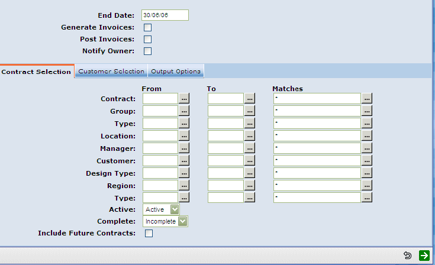
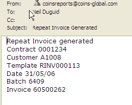

<?xml version="1.0" encoding="utf-8"?>
<html lang="en" xmlns:MadCap="http://www.madcapsoftware.com/Schemas/MadCap.xsd" MadCap:lastBlockDepth="5" MadCap:lastHeight="1097" MadCap:lastWidth="949">
    <head><title>Generating and Posting Invoices</title>
    </head>
    <body>
        <MadCap:concept term="Topics" />
        <h1 class="print">Generating and Posting Repeat Invoices</h1>
        <p>To generate repeat or recurring invoices, use <span class="function" title="Function:%WSL3000RSLR">Generate Repeat Invoices</span>. This will provide the set of options shown in the sample screen.</p>
        <p>
            
        </p>
        <ul>
            <li>To automatically generate and post, <MadCap:variable name="Variables.tick" /> both the Generate and Post options.</li>
        </ul>
        <blockquote dir="ltr" style="MARGIN-RIGHT: 0px;">
            <p>There is a non-post/preview option, letting you choose just to see what you'll get without posting. Merely avoid <MadCap:variable name="Variables.tick" />ing any of the 3 options: Generate Invoices, Post Invoice, or Notify Owner. See <a href="WDSL0011_Editing_Unposted_Invoices.html">Editing Unposted Invoices</a>.</p>
        </blockquote>
        <ul>
            <li>Choose one customer, for example.</li>
            <li>Then generate and notify the owner (the <MadCap:variable name="General.ProductName" /> user).</li>
        </ul>
        <p>The "Owner" will receive notification by email. This feature is more likely to be used if the owner reviews invoices prior to posting, for example to add a non-recurring charge or edit the standard charge.</p>
        <p>
            
        </p>
    </body>
</html>